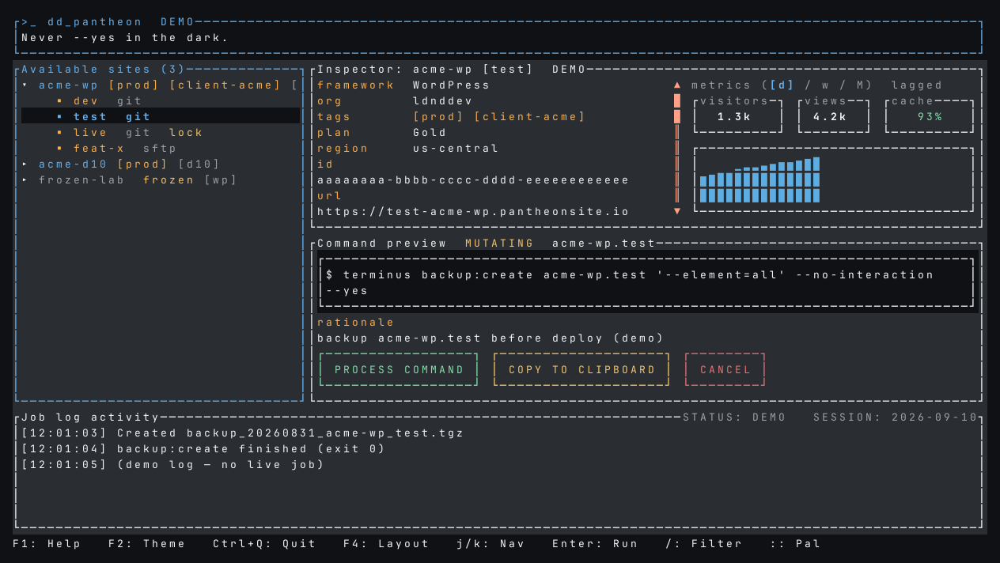
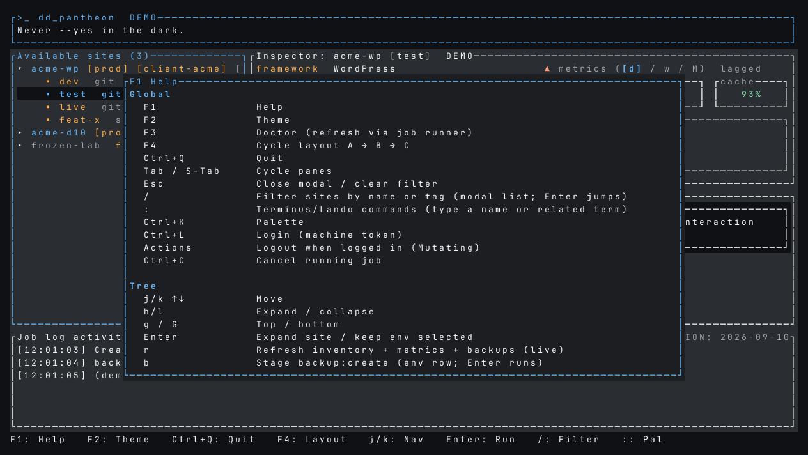
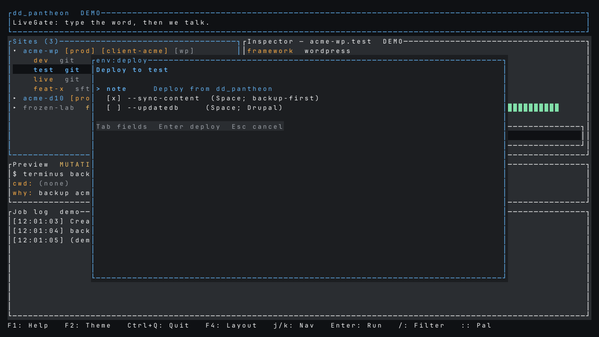
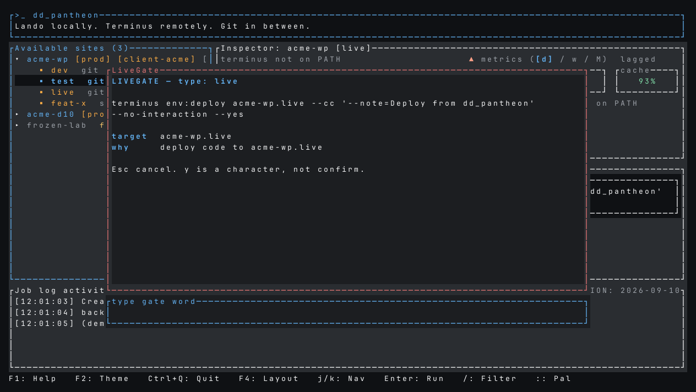
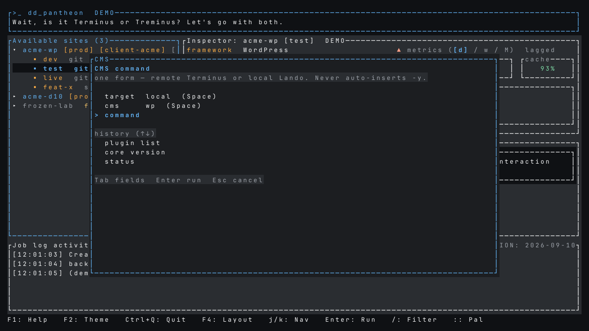
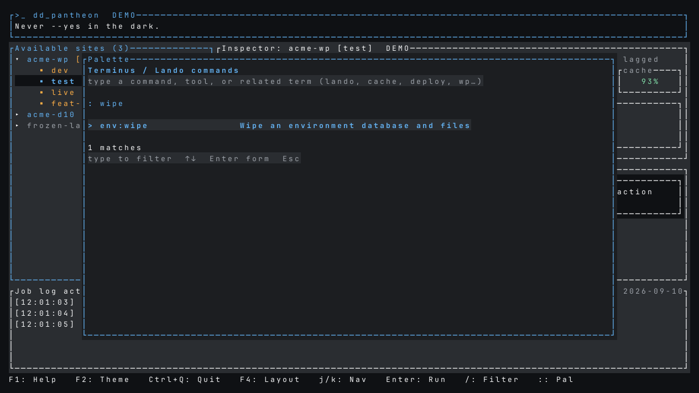

Install
You need a Unix machine (Linux is the v1 target) and the CLIs you actually run against Pantheon. The curl installer downloads a prebuilt package for this OS/arch — no Rust toolchain required:
terminus4.3.2 or compatible, onPATHlandoif you work locally (v3.26.x)gitfor git-mode deploys
Packages exist for Linux and macOS on x86_64 and arm64 (aarch64). The
binary lands at ~/.local/bin/dd_pantheon (override with
PREFIX or BINDIR). If no theme file exists yet,
it also installs dd_pantheon_theme.yml next to the other
ldnddev themes — not inside the app config dir.
curl -fsSL https://raw.githubusercontent.com/ldnddev/dd_pantheon/main/install.sh | bash
dd_pantheon --demo
dd_pantheon
dd_pantheon --root /path/to/site
curl -fsSL https://raw.githubusercontent.com/ldnddev/dd_pantheon/main/install.sh | bash -s -- uninstall
From a clone, ./install.sh builds with cargo when it is on
PATH. Pass --from-release to force the GitHub
package, or --from-source to force a cargo build (Rust
1.85+, edition 2024).
./install.sh
./install.sh --from-release
./install.sh uninstall
Uninstall removes the binary and the default theme file. It does
not delete ~/.config/ldnddev/dd_pantheon/
(history, sites overlay). If ~/.local/bin is missing from
PATH, the script prints the export line to add.
From a clone without installing (dev loop):
cargo run -- --demo
cargo run
cargo run -- --root /path/to/siteMissing Terminus is not fatal: the app still starts, the tree is empty, and login is disabled. Same idea if Lando or Git is missing — those workflows hide or skip.
First run: --demo
Start here. Demo loads three dummy sites (WordPress, Drupal, a frozen lab),
fake metrics, and a staged backup plan. It never spawns
your user plans. Enter toasts demo: no spawn.

--demo: tree, inspector, always-on preview, job log.
The DEMO badge uses the warning color on purpose.
Screenshots on this page are captured from that demo app. After a UI change, refresh them (see Refresh these screenshots).
Chrome and keys
Header is three lines. Footer is one line, always starting F1:Help then F2:Theme then quit. Quit is Ctrl+Q even inside a text field. Bare q does not quit.

- Tab / Shift+Tab — tree → inspector → preview → log
- j/k — move or scroll in the focused pane
- F3 — doctor (tool paths, versions, whoami, catalog count)
- Ctrl+C — cancel the running job’s process group
Login
Open the login modal with Ctrl+L, F3, or the Actions row Login. Paste a Pantheon machine token.
The token is visible in ps
Terminus 4.3.2 has no TERMINUS_MACHINE_TOKEN env of its own.
Spawn is terminus auth:login --machine-token=… in argv.
Preview and the job log redact it. Config, theme, and
sites.toml never store it. If
TERMINUS_MACHINE_TOKEN is already in your shell, the modal
can use it — that is a TUI convenience, not a Terminus feature.
Logged-out whoami (exit 0, empty stdout) is a normal launch state, not a parse bug. After login, inventory auto-fills. Logout is Mutating: it replaces the Login action while you are signed in.
The daily loop
- Select a site, expand it, pick an environment (j/k, h/l).
- Read the preview. It always shows the redacted shell line, cwd, why, and safety badge.
- Press Enter in preview (or after staging from the tree) to run.
Safety badges:
| Badge | What happens |
|---|---|
| READ-ONLY | Inventory/metrics auto-run. Palette ReadOnly still waits for Enter. |
| MUTATING | Preview + Enter. No extra modal. One mutating job per env slot. |
| DESTRUCTIVE | Confirm modal repeats argv, target, and why. Enter or y. |
| LIVEGATE | Type the gate word. y is a character, not confirm. |
Inventory ReadOnly (site list, env list, tags, env metrics) auto-runs with a 150 ms debounce so the cockpit is usable. The preview still shows those argv while they fire.
Deploy and LiveGate
e on dev / multidev is git-mode: dirty
env:diffstat blocks connection:set git, then
git push + workflow:wait --max=600.
On test and live, e opens a note form.
Test offers --sync-content (backup-first when checked). Live never syncs content.
Drupal gets --updatedb.

Deploy from dd_pantheon. Unchecking sync-content skips the backup-first prefix.
CMS form and palette
m is always the CMS form, never “month”. Metrics month is
Shift+M. One form: remote (Terminus) or local (Lando), wp or drush,
then the command after --.

sql-drop,
site-install) is Destructive. The form never auto-inserts
-y into the CMS argv.
: or Ctrl+K opens the command palette over the discovered
Terminus catalog and Lando tasks. Known dangerous names route into the same
plan_* constructors as the first-class keys. The palette
stages only — you still press Enter in preview to run.

plan_wipe.
Local Lando
Bind a project with --root /path/to/site (needs a
.lando.yml, or it still binds the path). Resolution order:
sites.toml local_path → config
[locals] → --root.
- s / S — start / stop
- Actions — rebuild and destroy (Destructive), pull (Destructive; overwrites local DB), code-only push (Mutating)
- DB push is LiveGate: type database
If the recipe is not pantheon, pull/push hide; global Lando still works.
Creating a site with “bind local” runs site:create then
local:clone --site_dir=….
Config files
| Path | What |
|---|---|
~/.config/ldnddev/dd_pantheon/config.toml |
Layout, last site/env, org ids, history, [locals]. No secrets. |
~/.config/ldnddev/dd_pantheon/sites.toml |
Optional overlay: cms, multidev_ok, git branch, local path. |
./dd_pantheon_theme.yml then ~/.config/ldnddev/dd_pantheon_theme.yml |
Visual-standard theme. Not nested in the app config dir. version: 1 only. |
~/.local/state/ldnddev/dd_pantheon/app.log |
Optional debug log when debug_log = true or RUST_LOG is set. Redacted argv only. |
Safety
Hard rules the TUI will not let you skip
- No silent
--yes. The runner injects it only after a TUI confirm. - One mutating job per slot (
site.env, local path, or global). - Backup before clone-content, restore, wipe, and test
--sync-content. - Dirty
env:diffstatblocksconnection:set git. - Palette is not a safety bypass. Unrouted names warn
raw palette — no backup-first / diffstat. - Preview-focused y copies the redacted line (
wl-copy/xclip).
When you are ready to leave demo, drop --demo, log in, and keep
watching the preview. The command is the product.
Refresh these screenshots
Do not hand-edit the PNGs. Recapture from the live --demo
widgets after any change to fixtures, chrome, layouts, or the modals on
this page. From the repo root:
cargo run --offline --example capture_demo -- docs/images
python3 docs/render_tui.py docs/images
The first command writes JSON cell grids (gitignored). The second needs
rsvg-convert and writes docs/images/demo-*.png
— commit those. Scene list and when to recapture:
docs/README.md.